تاريخ النشر xxxx 00، 0000، تاريخ النسخة الحالية xxxx 00، 0000. 10.1109/ACCESS.2020.2988889
دُعم هذا العمل من Semiconductor Research Corporation (SRC) وNational Science Foundation (NSF) من خلال ECCS 1740136. كما دُعم عمل Satwik Patnaik جزئياً من زمالة Global Ph.D. Fellowship في NYU/NYU AD.
المؤلفون المراسلون: Nikhil Rangarajan وSatwik Patnaik وShaloo Rakheja (البريد الإلكتروني: nikhil.rangarajan@nyu.edu، sp4012@nyu.edu، وrakheja@illinois.edu).
SMART: ذاكرة غير متطايرة Sآمنة Mمغناطوكهربائية قائمة على مضادّات Aالمغناطيسية Rومحصّنة ضد Tالعبث
الملخص
تتجه صناعة التخزين نحو ذواكر غير متطايرة ناشئة (NVMs)، تشمل ذاكرة الوصول العشوائي المغناطومقاومية بعزم نقل اللف المغزلي (STT-MRAM) وذاكرة تغيير الطور (PCM)، وذلك بفضل كثافتها العالية وتشغيلها منخفض الاستطاعة. نبرهن في هذه الورقة، وللمرة الأولى، نماذج دوائرية ومقاييس أداء معيارية لذاكرة الوصول العشوائي المغناطوكهربائية المضادّة للمغناطيسية (ME-AFMRAM) القائمة على انعكاس جدار المجال (DW)، وذلك على مستوى الخلية وعلى مستوى المصفوفة. كما نقدّم رؤى بشأن تبديل الذاكرة القائم على الدوران المتماسك مع قراءة بتأثير هول الشاذ مدفوعة بعازل طوبولوجي. في نظام الدوران المتماسك، يؤدي التبديل المغناطوكهربائي فائق الانخفاض في الاستطاعة، مقترناً بديناميكيات مضادّات المغناطيسية الواقعة في مجال التيراهرتز، إلى خفض جوهري في طاقة كل بت وزمن الكمون في ME-AFMRAM مقارنةً بذواكر NVMs أخرى، بما فيها STT-MRAM وPCM. بعد توصيف ME-AFMRAM الجديدة، نستثمر خصائصها الفريدة لبناء منصة ذاكرة غير متطايرة آمنة وكثيفة ومتكاملة على الرقاقة، تسمى SMART: ذاكرة غير متطايرة آمنة ومحصّنة ضد العبث قائمة على مضادّات المغناطيسية المغناطوكهربائية. تفتح تقنيات NVM الجديدة تحديات وفرصاً من منظور أمن البيانات. فعلى سبيل المثال، تجعل حساسيتها للحقول المغناطيسية وتقلبات درجة الحرارة، إضافة إلى بقاء بياناتها بعد انقطاع الطاقة، ذواكر NVMs عرضةً لسرقة البيانات وهجمات العبث. ولا تتميز ذاكرة SMART المقترحة بالمتانة في مواجهة هجمات سرية البيانات التي تسعى إلى تسريب المعلومات الحساسة فحسب، بل تضمن أيضاً سلامة البيانات وتمنع هجمات حجب الخدمة (DoS) على الذاكرة. وهي منيعة أمام هجمات معيّنة عبر قناة الاستطاعة الجانبية (PSC) تستغل بصمات القراءة/الكتابة غير المتماثلة للمستويين المنطقيين ‘0’ و‘1’، وكذلك أمام هجمات القناة الجانبية الفوتونية التي تراقب بصمات الانبعاث الضوئي من الجهة الخلفية للرقاقة.
Index Terms:
مواد مضادّة للمغناطيسية، تأثيرات مغناطوكهربائية، ذاكرة غير متطايرة، ذاكرة محصّنة ضد العبث، ذاكرة مغناطيسية.=-25pt
I المقدمة والخلفية
بلغ تحجيم ذاكرة الوصول العشوائي الديناميكية التقليدية (DRAM) نقطة تحول حرجة، إذ إن تصغير خلية DRAM وصل إلى حالة شبه ثبات في السنوات الأخيرة. ويواجه تحجيم حجم الميزة إلى ما دون عقدة التقنية 20 nm تحديات عديدة مثل أزمنة احتفاظ أقصر، وتيارات تسرب أعلى، ومعدلات أعطال أكبر [park2015technology]. وتشمل الحلول المطروحة لمعالجة هذه المخاوف تحسين كشف أعطال DRAM واستعادتها [wang2017improving]، إضافةً إلى تقنيات معمارية لتعزيز قابلية تحجيم DRAM [kim2015architectural].
يتمثل أحد الحلول الواعدة لمشكلة تحجيم الذاكرة في تحقيق نظام الذاكرة الرئيسة باستخدام تقنيات غير متطايرة [mutlu2015main]. وتشمل أمثلة الذواكر غير المتطايرة الناشئة (NVMs) ذاكرة الوصول العشوائي المغناطومقاومية بعزم نقل اللف المغزلي (STT-MRAM)، وذاكرة الوصول العشوائي الفيروكهربائية (FeRAM)، وذاكرة الوصول العشوائي المقاومية (ReRAM)، وذاكرة تغيير الطور (PCM). وقد ازداد الاهتمام بالتطبيق التجاري لهذه الذواكر NVMs ازدياداً كبيراً. فعلى سبيل المثال، تستعمل السلسلة الحالية من أنظمة ذاكرة 3D XPoint لدى Intel تقنية NVM قائمة على PCM [wyrwas2017proton]، كما يأتي قرص الحالة الصلبة من IBM وEverspin مزوداً بذاكرات تخزين مؤقت للكتابة من نوع STT-MRAM [everspin]. وعلى الرغم من أن ذواكر NVMs تقدم خصائص جذابة، مثل الكثافة العالية، والتسرب المنخفض، والاحتفاظ غير المتطاير بالبيانات، فإنها تعاني أيضاً من ضعف التحمل وارتفاع كمون الوصول في تنفيذها الحالي.
خضع أمن الذاكرة لمزيد من التدقيق على مر السنين. ويرجع ذلك إلى أن هجمات مثل Spectre [kocher2019spectre] وMeltdown [lipp2018meltdown]، التي تستهدف القنوات الجانبية المرتبطة بالتنفيذ التخميني والتنفيذ خارج الترتيب، على التوالي، كشفت ثغرات خطيرة في طيف واسع من المعالجات المنشورة حالياً ومعماريات الذاكرة الخاصة بها. وفي حالة ذواكر NVMs، يشكل بقاء البيانات بعد انقطاع الطاقة تهديداً شديداً لسرية البيانات، إذ يستطيع المهاجمون الساعون إلى سرقة البيانات الخاصة فعل ذلك بسهولة عبر شن هجمات الإقلاع البارد [halderman2009lest] أو هجمات إزالة أخرى مثل سرقة وحدة الذاكرة (DIMM) [young2015deuce]. وفضلاً عن ذلك، فإن الذواكر المغناطيسية مثل STT-MRAM شديدة الحساسية للحقول المغناطيسية الشاردة. وعلى هذا الأساس، يمكن استخدام هجمات قائمة على المجال المغناطيسي [jang2015self] لإفساد البيانات المخزنة أو المساس بالسلامة الوظيفية للذاكرة، مما يؤدي إلى هجوم حجب خدمة (DoS). ومن ثم فإن مثل هذه الثغرات الأمنية تضع عائقاً كبيراً أمام انتشار NVMs على نطاق واسع وبصورة شاملة في صناعة الذاكرة.
I-A الأعمال ذات الصلة في أمن الذاكرة
ركزت الأعمال السابقة المتعلقة بتأمين ذواكر NVMs أساساً على مخططات تشفير الذاكرة، وهي ضرورية لمنع المهاجمين من استغلال بقاء البيانات في حالة إيقاف التشغيل. اقترح Chhabra وآخرون مخطط تشفير تزايدي [chhabra2011nvmm] لذواكر NVMs تُشفَّر فيه انتقائياً صفحات الذاكرة الخاملة فقط، أي الصفحات التي لم يُنفذ عليها وصول لعدة دورات ساعة. أما مجموعة العمل في الذاكرة (المستخدمة حالياً) فتبقى بنص صريح، ومن ثم لا تتحمل أي كلفة تشفير عند الوصول. ويضمن هذا التشفير الانتقائي أن غالبية محتوى الذاكرة الرئيسة (وليس كله) تبقى مشفرة في جميع الأوقات، من دون الإضرار المفرط بالأداء. إلا أنه يتطلب عتاداً مخصصاً، وتنبؤاً بالصفحات الخاملة، وجدولةً لتنفيذه. وقد عُرض مخطط تشفير المسار الخفي (SPE) لذواكر NVMs القائمة على الممريستورات في [kannan2014secure]، حيث تُستغل المسارات الخفية في مصفوفة ممريستورات متصالبة لتطبيق نبضات تشفير تغيّر مقاومات خلايا الذاكرة، ومن ثم تشفّر البيانات المخزنة.
في [young2015deuce]، اقترح المؤلفون DEUCE، وهو تشفير بعدّاد مزدوج لذاكرات PCM، يخفض بدرجة كبيرة عدد البتات المعدلة في كل عملية كتابة راجعة، وذلك لتحسين الأداء وعمر الذاكرة. ويهدف هذا المخطط إلى تخفيف أثر الانهيار الجليدي [mandal2012performance] الذي يحدث أثناء تشفير الذاكرة، بإعادة تشفير الكلمات المعدلة فقط وكتابتها راجعاً في أثناء أي عملية كتابة. وقد طوّر Swami وآخرون هذه الفكرة واقترحوا SECRET [swami2016secret]، وهو مخطط تشفير ذكي لذواكر NVMs يدمج إعادة التشفير على مستوى الكلمة مع الكتابات الجزئية المعتمدة على الصفر لتقليل عمليات الكتابة في الذاكرة. كما يبرهنون تحسين الكتابة عبر استخدام “أقنعة الطاقة” (أي قوالب بتات تُجرى لها عملية XOR مع النص المعمى للحصول على تبديد طاقة أدنى) في منطق XOR الخاص بالتشفير، مما يقلل انقلابات البتات في عملية التشفير، ومن ثم يخفض إجمالي طاقة الكتابة. وقد عُرض تشفير نمط العدّاد المتقدم (ACME) في [swami2018acme]، وهو يستفيد من معمارية تسوية الكتابة الكامنة في ذاكرات PCM لتنفيذ تسوية كتابة العدّادات. يساعد ACME على تجنب هجمات من نمط Rowhammer بمنع العداد المرتبط بأي سطر مفرد من الذاكرة المخبئية من الفيضان.
سُلّط الضوء في [jang2015self] على أثر العبث غير التلامسي في STT-MRAMs باستخدام حقول مغناطيسية خارجية. وباستخدام محاكاة ميكرومغناطيسية، بيّن مؤلفو [jang2015self] كيف يمكن للهجمات القائمة على المجال المغناطيسي أن تفسد محتويات خلايا STT-MRAM. وشملت تقنيات الحماية من الهجمات غير التلامسية المقترحة في [jang2015self]: (i) مستشعراً مدمجاً على الرقاقة لكشف الاقتحامات القائمة على المجال المغناطيسي، و(ii) وحدات تصحيح أخطاء لتعويض أعطال الخلايا الناشئة عن هجمات المجال المغناطيسي. غير أن هذه التقنيات تفرض عقوبات كبيرة في الطاقة والمساحة بسبب العتاد الإضافي الذي يفرضه مستشعر المجال المغناطيسي ومخطط تصحيح الأخطاء.
I-B المساهمات
نقدم في هذه الورقة بديلاً لذواكر NVMs التقليدية مثل STT-MRAM وPCM، يتمثل في SMART: ذاكرة غير متطايرة آمنة ومحصّنة ضد العبث قائمة على مضادّات المغناطيسية المغناطوكهربائية. تستفيد ذاكرة SMART من التأثير المغناطوكهربائي الخطي (ME) عند درجة حرارة الغرفة في مضادّات المغناطيسية (AFMs) مثل الكروميا [rado1961observation]، الذي يمكن تبديله باستخدام نبضات جهد فقط، من دون استخدام تيارات كهربائية، مما يؤدي إلى تشغيل فائق الانخفاض في الطاقة ( بيكو جول). وفضلاً عن ذلك، تقع الديناميكيات الذاتية لمضادّات المغناطيسية عادةً في نظام التيراهرتز ( Hz) [khymyn2017antiferromagnetic]، الأمر الذي قد يمكّن من انعكاس مجال AFM على مقياس زمني بالبيكوثانية. وإضافة إلى مزاياها في الطاقة والكمون، تقدم ذاكرة SMART تقدماً كبيراً من حيث التخزين الآمن والمحصّن ضد العبث للبيانات. فعلى سبيل المثال، لا تبدي AFMs بصمة مغناطيسية لأنها لا تملك عزماً مغناطيسياً خارجياً صافياً، خلافاً للمواد الفيرومغناطيسية (FM). ومن ثم لا يمكن سبر ذاكرة SMART أو تبديلها بحقول مغناطيسية خارجية، خلافاً لما يمكن فعله في STT-MRAMs. وهذا بدوره يلغي احتمال أن تقوض هجمات المجال المغناطيسي سلامة البيانات أو تسعى إلى إحداث DoS. ولمعالجة بقاء البيانات في ذاكرة SMART بعد إيقاف التشغيل، نبرهن مخطط تشفير داخل الذاكرة يستخدم منطق controlled-NOT (CNOT) القائم على ترانزستورات ME-AFM. ونناقش متانة ذاكرة SMART في مواجهة الهجمات التي تهدف إلى تقويض سرية البيانات وموثوقيتها، في حالتي التشغيل وإيقاف التشغيل. ويمكن تلخيص المساهمات الرئيسة لهذا العمل على النحو الآتي:
-
1.
نناقش تصميم SMART، وهي ذاكرة NVM آمنة قائمة على ME-AFM، وننفذ نموذجها الدائري في SPICE لمحاكاة أداء الذاكرة.
-
2.
نبرهن متانة ذاكرة SMART في مواجهة هجمات المجال المغناطيسي ودرجة الحرارة، التي يمكن أن تؤثر في ذواكر NVMs أخرى مثل STT-MRAM. كما نستكشف تبعات الهجمات المختلفة عبر القنوات الجانبية على ذاكرة SMART.
-
3.
نقدم مخطط تشفير داخل الذاكرة باستخدام بوابات CNOT قائمة على ترانزستورات ME-AFM، يسمى Memcryption، لحماية البيانات المخزنة في ذاكرة SMART من هجمات الإقلاع البارد وسرقة وحدات DIMM، مع تحمل أعباء كمون تشفير منخفضة. ونود أن نذكر هنا أن Memcryption مصمم تحديداً من أجل ME-AFMRAM، وليس من أجل NVM عام. كما أنه لا يؤمّن نظام الذاكرة ضد هجمات التنصت على الناقل؛ فهذه الهجمات تقع خارج نطاق هذا العمل.
في القسم التالي، نصف نمذجة ذاكرة ME-AFM المقترحة وتنفيذها وقياس أدائها معيارياً على مستويي الخلية والمصفوفة، قبل الانتقال إلى تقييم خصائصها الأمنية في القسم III.
II نموذج الجهاز ووظيفته
II-A التأثير المغناطوكهربائي
يمثل التأثير ME الخطي [agyei1990linear] الاقتران بين المجال المغناطيسي المطبق والاستقطاب المستحث، أو بين المجال الكهربائي المطبق والمغنطة المستحثة، في البلورات غير المركزية التناظر مثل الكروميا (). وبالمقارنة مع انعكاس مغنطة FM القائم على STT، الذي يتطلب تيارات كهربائية من رتبة A/cm2 ويتسبب بتسخين جول مرافق، يوفر التأثير ME تبديلاً كهربائياً بالكامل وفعالاً طاقياً لمغنطة الحد السطحي في الكروميا غير الحساسة للخشونة [echtenkamp2013electric]. وإضافة إلى ذلك، فالكروميا AFM؛ ولذلك فإن العزم المغناطيسي الحجمي الصافي (أي فرق متجهات مغنطة الشبكات الفرعية) ينعدم ويصبح غير محسوس خارجياً. ومع ذلك، فإن مغنطة الحد السطحي مقترنة بقوة بمعلمة ترتيب AFM. أي إن التبديل الكهربائي لترتيب AFM يؤدي إلى انعكاس مغنطة الحد السطحي [wu2011imaging]، وهو ما يُستخدم لترميز المعلومات في ذواكر ME-AFM.
تؤدي العزوم السطحية غير المتكافئة عند سطح (0001) في الكروميا إلى مغنطة حدية توازنية، يمكن أن تكون في إحدى حالتي مجال متعاكستين في الاصطفاف ومتناظرتين في الطاقة. ويُرفع التناظر بين المجالين عبر التخمير ME، الذي يسمح بالاختيار التفضيلي لإحدى الحالتين [he2010robust]. أي إن التخمير ME يستقطب السطح وينتج عزماً سطحياً وحيد المجال. وقد بُرهن تجريبياً التبديل المتساوي الحرارة بين حالتي المجال الوحيد هاتين باستخدام مجال كهربائي ومجال مغناطيسي مستمر صغير كاسر للتناظر [he2010robust, fallarino2015magnetic]. والشرط الحرج لهذا التبديل ME هو أن يتجاوز مقدار حاصل الضرب حاجز طاقة العتبة ME، الذي ثبت تجريبياً أنه يمكن أن ينخفض إلى 1 J/m3 [brown1969domain, martin1966antiferromagnetic].
II-B ME-AFMRAM: مبدأ العمل
تظهر ME-AFMRAM القائمة على الكروميا، التي تقع في صميم ذاكرة SMART لدينا، في الشكل 1. وقد بُرهن ME-AFMRAM تجريبياً بواسطة Kosub وآخرون [kosub2017purely]، وهي تملك قطب بوابة سفلياً (بوابة بلاتين في الشكل) لتطبيق جهد البوابة وتوفير المجال الكهربائي اللازم لكتابة البيانات في الذاكرة. ويوفر المجال الشارد لمغناطيس دائم مجالاً مغناطيسياً صغيراً كاسراً للتناظر ( 30 mT). وسيوجه الجهد الموجب الترتيب الحجمي، ومن ثم يضع مغنطة السطح في مجال واحد (مع عزوم سطحية متجهة إلى الأعلى)، بينما يؤدي الجهد السالب إلى ارتخاء مغنطة السطح نحو المجال المعاكس (مع عزوم سطحية متجهة إلى الأسفل). وتتوافق هاتان الحالتان مع المستويين الثنائيين ‘1’ () و‘0’ ()، على التوالي. ويقابل جهد بوابة مقداره 0 V نمط ‘الاحتفاظ’ في خلية الذاكرة. ويُلاحظ أن الخلية تعمل كذاكرة غير متطايرة في جميع مجالات جهد البوابة، وليس فقط عند .
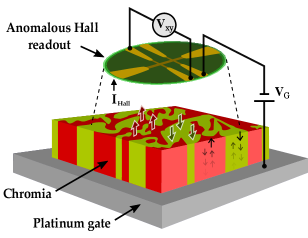
تتحقق القراءة باستخدام إعداد قطب على شكل قضيب هول شاذ (AH)، يميّز مغنطة الحد السطحي للكروميا باستشعار المغنطة المستحثة بتأثير القرب في قطب البلاتين (Pt) القريب، منتجاً بذلك جهد هول متناسباً (أو ) [kosub2015all]. وتقليدياً، تُقرأ معلمة ترتيب AFMs عبر ترتيب انحياز تبادلي [toyoki2015magnetoelectric] في FM أخرى ملحقة مباشرة بسطح AFM. غير أن الانحياز التبادلي وتباطؤ FM يزيدان الجهد القسري المطلوب لتجاوز حاجز ME، ومن ثم يؤثران سلباً في طاقة الكتابة. ولتجنب هذا الأثر، اقترح Kosub وآخرون [kosub2017purely] استخدام إعداد ME-AFM حصراً مع قراءة AH لمغنطة السطح، مما يلغي الحاجة إلى FM. وفي وقت كتابة هذه الورقة، لا يزال الفهم الفيزيائي الكامل لآلية قراءة مغنطة الحد السطحي في الكروميا غير متوافر. وبينما نظر المؤلفون في [kosub2017purely] إلى قراءة قائمة على AH في جهازهم، كشفت تجارب حديثة أجرتها مجموعة C. Binek في University of Nebraska-Lincoln عن مساهمة المقاومة المغناطيسية لهول اللف المغزلي (SMR) في إشارة القراءة، وهي مساهمة قيد البحث حالياً. ومع ذلك، تجدر ملاحظة أن مقدار مستويات الإشارة متماثل في الحالتين (AH مقابل SMR)، وأن نماذج الدوائر المطورة ستبقى هي نفسها أيضاً، وإن اختلفت معاملات الدخل. ولأغراض هذه الورقة، نعدّ أن إشارة القراءة تعود إلى تأثير AH في المعدن الثقيل القريب، كما نوقش أيضاً في الأعمال التجريبية السابقة.
II-C نمذجة الأداء
يمكن تصنيف آلية الانعكاس ME في الكروميا عموماً إلى فئتين، تبعاً لحجم الغشاء مقارنةً بعرض جدار المجال (DW) المميز. وبالنسبة إلى الكروميا، يكون عرض DW النموذجي 50-100 nm، حيث إن هو ثابت صلابة التبادل و هي طاقة التباين وحيد المحور [belashchenko2016magnetoelectric]. إذا كانت العينة أصغر بكثير من عرض DW، فإنها تنعكس بالدوران المتماسك عند تطبيق ضغط ME. أما في أبعاد عينة مقاربة لعرض DW، فيحدث الانعكاس ME عبر تنوية DW وانتشاره، وهي عملية تبديل غير متماسكة. وفي كل من الدوران المتماسك وانتشار DW، يمكن أن يكون الانعكاس منشطاً حرارياً عندما يكون ضغط ME المطبق أدنى من حاجز الطاقة بين حالتي المجال المستقرتين. وبخلاف ذلك، يتقدم انعكاس المجال في نظام ‘الجريان’ [parthasarathy2019dynamics]. وتقع أبعاد أجهزة ME-AFMRAM المصنعة حالياً في مجال m، مما يجعل انتشار DW آلية الانعكاس ME المفضلة. ولتوصيف وظيفة ME-AFMRAM المعتمدة على الكروميا وأدائها، نطور نماذج دوائرية تمثل الانعكاس القائم على DW في كل من النظام المنشط حرارياً ونظام الجريان. كما نقدم رؤى وإمكانات مستقبلية بشأن التحجيم البعدي للجهاز، الذي قد يتيح انعكاساً فائق السرعة ومتّسقاً قائماً على الدوران.
II-C1 انعكاس DW في ME-AFMRAM المعتمدة على الكروميا
لننظر في عينة كروميا ينشئ فيها ضغط ME المطبق فرق ضغط مقداره بين المجالين. وهنا، تمثل معامل ME الخطي.
إذا كان (أي بالنسبة إلى ضغط إزالة تثبيت DW)، فإن DW ينتشر كجريان لزج بسرعة تعطى بالعلاقة [parthasarathy2019dynamics]
حيث إن هو ثابت تخميد Gilbert، و هي النسبة الجيرومغناطيسية للإلكترون، و هي مغنطة الإشباع للشبكة الفرعية، و. ولمسار حر متوسط مقداره لجدار DW، يكون المقياس الزمني للانعكاس ME الناجم عن الانتشار اللزج لجدار DW هو .
إذا كان ، فإن DW يخضع لزحف حراري لتجاوز حاجز إزالة التثبيت، بمقياس زمني [parthasarathy2019dynamics]
حيث إن هي الطاقة الحرارية (25 meV عند 300 K)، و و و هي، على التوالي، طاقة DW وكثافته السطحية ومساحته السطحية. ويتحدد ضغط إزالة تثبيت DW بطاقة DW ومساحته السطحية ونصف قطر مركز إزالة التثبيت غير المغناطيسي.
لكتابة ‘1’ (‘0’) في خلية الذاكرة، يلزم مجال كهربائي موجب (سالب)، ، بمقدار أكبر من المجال الكهربائي الحرج، ، وذلك لتلبية معايير انتشار DW . وفي هذه الحالة، يساوي زمن كتابة البيانات في الذاكرة . وعندما يكون أصغر من (أي )، تكون خلية الذاكرة في نمط الاحتفاظ، ويُحدد زمن الاحتفاظ بواسطة . وبالنسبة إلى معاملات نموذجية للكروميا، نجد أن ، مما يضمن أن خلية الذاكرة مستقرة حرارياً عندما لا يجري الوصول إليها. وهنا، تتحدد استقرارية الخلية بواسطة ، لأن الاحتفاظ الأطول بالبيانات يتطلب أن يكون ثابت الزمن في نمط الاحتفاظ أكبر. ويمكن تحسين زمن الاحتفاظ في الخلية أكثر بزيادة أبعادها.
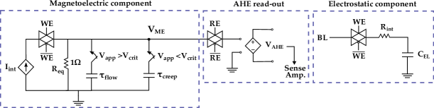
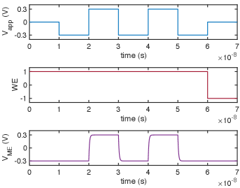
نبني نموذج دائرة SPICE لالتقاط ديناميكيات الانعكاس ME في الكروميا وظيفياً. ويمثل ثابت الزمن لانعكاس مغنطة الكروميا بسبب ضغط ME مطبق بالرمز . ومن دون فقدان العمومية، يستخدم نموذج الدائرة ، في حين يكون إما أو . ولبناء خلية ME-AFMRAM الكاملة، نجمع نموذج RC لاستجابة ME في الكروميا مع دوائر القراءة/الكتابة الطرفية في Cadence Virtuoso باستخدام تقنية CMOS FreePDK ذات العقدة 15-nm. ويعرض الشكل 2 الدائرة المكافئة لخلية ME-AFMRAM. وتُوفَّر نبضة الكتابة، المستخدمة لشحن عازل الكروميا وتبديل مغنطته ، عبر مصدر التيار (المشتق من خط البت) في إعداد الكتابة. وبالنسبة إلى معاملات الكروميا المدرجة في الجدول I، nF، و mF، و V. عند V، يتتبع القيمة وتُكتب البيانات في الخلية بعد كمون وصول كتابة مقداره . وعندما يكون V، تُحتفظ البيانات لمدة زمنية مقدارها . ونظراً إلى أن كبير جداً، فإن الاستجابة في نمط الاحتفاظ/الزحف بطيئة للغاية مقارنةً بنمط الكتابة/الجريان. وتُعرض الاستجابة العابرة لخلية ME-AFMRAM في الشكل 3 لإبراز عملية الكتابة. ويُستحصل كمون الكتابة لخلية ME-AFMRAM بقيمة ns، وتبلغ طاقة كل بت في عملية كتابة واحدة pJ، بما في ذلك الطاقة المطلوبة لشحن السعة الكهروستاتيكية للكروميا. وبالنظر إلى السماحية العازلة النسبية 11 والأبعاد المذكورة في الجدول I، تُحسب السعة الكهروستاتيكية للكروميا على أنها aF.
II-C2 القراءة بتأثير هول الشاذ
لتقييم دورة القراءة، نضبط الإشارتين WE على 0 وRE على 1 في الشكل 2. صُمم إعداد القراءة لاستشعار مغنطة الحد السطحي للكروميا عبر ترتيب AH يحوّل المغنطة إلى إشارة جهدية. وتُنمذج عملية التحويل هذه باستخدام مصدر جهد متحكم فيه بالجهد (VCVS). وعادةً ما يُستخدم معدن ثقيل مثل Pt لاستشعار العزم المستحث بتأثير القرب من طبقة الكروميا المقترنة [kosub2017purely].
يُعطى جهد AH المستشعر من ترتيب قضيب هول بالعلاقة [griffiths2017anomalous]
حيث إن هي نفاذية الفراغ، و هو معامل AH، و هو تيار انحياز هول، و هو سمك طبقة هول، و هي المغنطة المستحثة بتأثير القرب. وفي حالة Pt/Cr2O3، لا يزيد إلا على نحو pm/T عند nm و K [meyer2015anomalous]. وينتج عن ذلك إشارة AH مقدارها 0.3 V، عند اعتبار انحياز هول مقداره 2 mA وجهد عقدة مغناطوكهربائية V. ويمكن رفع إشارة هول إلى 1 V بزيادة إلى 1 V، كما يمكن تعزيزها أكثر بتطبيق انحياز هول أكبر. إلا أن ذلك سيؤثر سلباً في الطاقة المستهلكة في عملية القراءة. وسيتطلب استشعار إشارة AH منخفضة كهذه ضمن مجال V مضخمات استشعار قياسية متقدمة ذات كلفة عالية في المساحة والاستطاعة (مثلاً مساحة 2.5 mm2 واستطاعة ضمن مجال mW [witte2008current]).
يمكن معالجة هذه المشكلة باستكشاف أنظمة مواد أخرى ذات اقتران لف مغزلي-مداري (SOC) بيني أعلى بكثير، مما ينتج معاملات AH أكبر. في [zhang2014effective]، ثبت أن ثلاثية الطبقات Pt/Co/Pt تبدي m/T عند 300 K من أجل 10 nm، مما يؤدي إلى 43.8 V عند انحياز هول مقداره 2 mA و V. وتملك أشباه الموصلات المغناطيسية مثل EuTiO3 قيماً أعلى لـ مقدارها m/T من أجل 25 nm [takahashi2018anomalous]. غير أن إشارات AH في مثل هذه العينات لم تُكشف إلا عند درجات حرارة منخفضة جداً، قدرها 2K، وهي درجات يختفي عندها التأثير ME في Cr2O3.
يمكن تحسين إشارة هول في العوازل الطوبولوجية (TI) بسبب وجود حالات سطحية معززة بـSOC عالٍ. فعلى سبيل المثال، يبرهن مكدس Bi2Se3/LaCoO3 المدروس في [zhu2018proximity] قيمة تصل إلى m/T عند 100 K من أجل 20 nm. وينتج عن ذلك تحسن جوهري في إشارة AH المتولدة (أي mV). ويُعزى تأثير AH في واجهة Bi2Se3/LaCoO3 إلى الاقتران التبادلي بين طبقة Bi2Se3 وطبقة LaCoO3 الفيرومغناطيسية عبر تأثير القرب، ويعززه SOC البيني العالي. وبالمثل، يحقق نظام (BiSb)2Te3/TIG المدروس في [tang2017above] إشارة AH ضمن مجال mV، وإن كانت أقرب بكثير إلى درجة حرارة الغرفة. وتُوضح مقارنة في أنظمة مواد مختلفة في الشكل 4. وكما يمكن استنتاجه، فإن TIs مرشحة مثالية كمادة لتنفيذ طبقة قراءة AH مع Cr2O3، بسبب إمكانية الحصول على إشارة AH ضمن مجال mV، يمكن قراءتها بسهولة باستخدام مضخم استشعار عادي بمزلاج تياري [kobayashi1993current]، أي من دون الحاجة إلى معدات استشعار متقدمة.
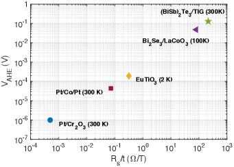
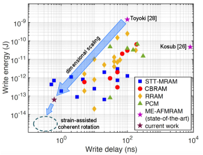
II-C3 الانعكاس القائم على الدوران المتماسك
يمكن تحسين كمون الكتابة ضمن مجال ns لخلية ME-AFMRAM تحسناً جذرياً إذا أمكن تبديل ترتيب الكروميا عبر الدوران المتماسك. ففي هذه الحالة، تخضع عينة الكروميا بأكملها للانعكاس بصورة متجانسة بدلاً من اتباع انتشار DW غير المتماسك. وعند ، تتبدل معلمة الترتيب عبر تخميد المبادرات الجيرومغناطيسية [parthasarathy2019dynamics]. أما إذا كان ، فقد تتبدل المغنطة بسبب التنشيط الحراري. وهنا يعتمد زمن التبديل اعتماداً أسياً على حاجز طاقة العينة. وفي جميع الأحوال، فإن التنشيط الحراري هو الذي يؤدي إلى أخطاء الاحتفاظ.
لتحقيق الدوران المتماسك في الكروميا، يجب أن يتجاوز ضغط ME المطبق J/m3. وبالنسبة إلى مجال مغناطيسي مقداره 0.5 T و ps/m، يكون المجال الكهربائي المطلوب للدوران المتماسك V/m. ولسوء الحظ، قد يؤدي مثل هذا المجال الكهربائي العالي إلى انهيار عازل الكروميا، نظراً إلى أن شدة انهيار الكروميا تبلغ V/m [sun2017local]. ويتمثل حل محتمل لهذا التحدي في تقليل التباين الفعال للعينة بحيث ينخفض مجال العتبة الكهربائي المطلوب. ويمكن تحقيق ذلك عبر تقنيات متعددة، تشمل السبك الاستبدالي وتطبيق إجهاد ميكانيكي [mu2019influence]. ويُقدّر أن كمون الكتابة في خلية ME-AFMRAM المعززة بالإجهاد يمكن أن ينخفض إلى بضع 10ات من ps. وتُعرض مقارنة بين أحدث ما وصلت إليه تقنية ME-AFMRAM حالياً وإمكاناتها المستقبلية مقابل اتجاهات أجهزة التخزين الناشئة الأخرى في الشكل 5.
II-C4 المعاملات المادية والهندسية لخلية ME-AFMRAM المعتمدة على الكروميا
تُدرج معاملات المحاكاة المستخدمة في نماذج SPICE الخاصة بنا لـME-AFMRAM المعتمدة على الكروميا في الجدول التالي I.
| Parameter | Value | Ref. |
|---|---|---|
| Saturation magnetization of Cr2O3, | A/m | [artman1965magnetic] |
| Magnetoelectric coefficient of Cr2O3, | s/m | [hehl2008relativistic] |
| Uniaxial anisotropy energy of Cr2O3, | J/m3 | [foner1963high] |
| Gilbert damping constant of Cr2O3, | [belashchenko2016magnetoelectric] | |
| Threshold ME pressure to depin DW, | J/m3 | [parthasarathy2019dynamics] |
| Applied magnetic field, | T | |
| Applied voltage, | V | |
| Length of cell, | nm | |
| Width of cell, | nm | |
| Thickness of cell, | nm | |
| Temperature, | K | |
| (@ ) | ms | |
| (@ J/m3) | ns |
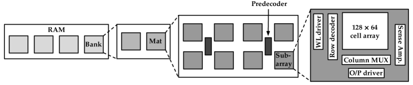
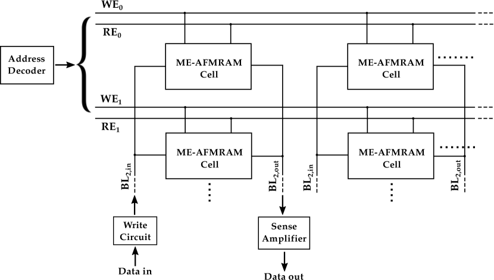
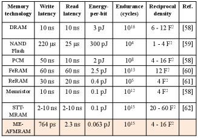
II-D مصفوفة ME-AFMRAM
لتقييم أداء ME-AFMRAM على مستوى النظام في سياق تقنيات الذاكرة القائمة، نحاكي رقاقة ME-AFMRAM بسعة 64KB وقائمة على DW باستخدام NVSim، وهي أداة معيارية لتقدير مقاييس أداء ذواكر NVMs الناشئة [dong2012nvsim]. ويظهر تنظيم هذه الذاكرة بسعة 64KB، كما استُفيد من [dong2012nvsim]، في الشكل 6. وتُبرز البنية الداخلية لمصفوفة خلايا ME-AFMRAM، إلى جانب مفككات الترميز والمشغلات ومضخمات الاستشعار الطرفية، المبنية عند عقدة CMOS ذات 15-nm، في الشكل 7. ويُستحصل كمون الكتابة الكلي لذاكرة ME-AFMRAM بسعة 64KB، بما في ذلك الطفيليات والكمون الطرفي (133.9 ps) وزمن تبديل الخلية المهيمن (630 ps)، على أنه 763.9 ps من NVSim [dong2012nvsim]. ويمكن تحسين كمون الكتابة بمقدار رتبة واحدة عبر الدوران المتماسك لمعلمة الترتيب. أما كمون القراءة الكلي للرقاقة، المستحصل من NVSim [dong2012nvsim]، فيبلغ 2.3 ns. ويشمل ذلك مساهمات من مضخم الاستشعار (1.45 ns)، وطفيليات خط البت (3.5 ps)، ومفككات الترميز والطرفيات الأخرى (150 ps)، وتأخير قياس AH المهيمن في طبقة Bi2Se3 (0.7 ns) [kikuchi2016anomalous]. وتستطيع مخططات قياس AH النبضية المتقدمة مثل [kikuchi2016anomalous] العمل في نظام GHz.
يمكن تحقيق استشعار خط البت الخرج باستخدام مضخم مزلاج تياري تقليدي إذا استُخدمت مادة ذات SOC كبير مثل TI لتوليد إشارة AH ضمن مجال عشرات mV. ومن المتوقع أن يكون تحمل القراءة/الكتابة في ME-AFMRAM مماثلاً لتحمل STT-MRAM. وتُعرض مقارنة مقاييس أداء ME-AFMRAM مع تقنيات ذاكرة أخرى على مستوى الرقاقة في الجدول II. ويمكن ملاحظة أن ME-AFMRAM توفر بعض المزايا التنافسية على ذواكر NVMs أخرى، وكذلك على أنظمة الذاكرة التقليدية.
III التطبيق كذاكرة آمنة
بعد إجراء النمذجة وقياس الأداء معيارياً على مستويي الخلية والمصفوفة لـME-AFMRAM المعتمدة على الكروميا، نتابع تنفيذ ذاكرة SMART المقترحة باستخدام ME-AFMRAM.
III-A نموذج التهديد
نناقش أولاً نموذج التهديد، محددين قوى المهاجمين وقدراتهم، وكذلك أهداف الهجوم الناجح وتبعاته. ومعظم سيناريوهات الهجوم المعروضة هنا، وليس كلها، خاصة بذواكر NVMs.
-
•
يمكن للمهاجمين شن هجمات إقلاع بارد [halderman2009lest]. في أثناء إيقاف التشغيل، توجد فترة كمون بعد بدء تسلسل إيقاف التشغيل وحتى اللحظة التي تُؤمَّن فيها محتويات الذاكرة تماماً. وقد يستغل مهاجم هذه الفجوة لقراءة محتويات الذاكرة. وللالتفاف على مثل هذه الهجمات، يُستخدم تشفير الذاكرة عادةً [chhabra2011nvmm, swami2018acme].
-
•
يمكن للمهاجمين استغلال خصائص مثل الحساسية للحقول المغناطيسية وتقلبات درجة الحرارة لإفساد البيانات أو إحداث DoS [jang2015self]. وقد يكتبون قسراً أنماط بيانات محددة في الذاكرة، مما يسرّع التقادم ويسبب أعطالاً في الذاكرة.
-
•
بامتلاك معدات تحليل الأعطال، يستطيع المهاجمون أيضاً اللجوء إلى هجمات اقتحامية متقدمة. وتستهدف غالبية هذه الهجمات نهاية خط التصنيع الخلفية (BEOL)، مقتربة من الطبقة المعدنية العليا، وهو ما يشار إليه أيضاً بهجمات الواجهة الأمامية. وقد اقتُرحت تدابير مضادة متعددة لحماية الواجهة الأمامية، تشمل شبكات واقية ودروعاً ومستشعرات [lee19_shield, weiner18]. وفي كل الأحوال، تُعد هجمات التنصت على الناقل خارج نطاق هذا العمل.
-
•
يمكن استغلال بصمات تبديد الاستطاعة عند قراءة/كتابة ‘0’ و‘1’ داخل NVM في هجمات القنوات الجانبية لاستنتاج البيانات، عبر تقنيات مثل تحليل الاستطاعة التفاضلي (DPA) [kocher1999differential] وتحليل الاستطاعة بالارتباط (CPA) [brier2004correlation].
III-B هجمات المجال المغناطيسي ودرجة الحرارة
تملك STT-MRAMs وصلات نفق مغناطيسية (MTJs) قائمة على FM بوصفها لبنات البناء الأساسية. وتمتلك FMs مغنطة عيانية (أو بصمة مغناطيسية) يمكن سبرها أو استنتاجها باستخدام مجال مغناطيسي خارجي. ومن ثم يمكن استخدام الحقول المغناطيسية لاستنتاج البيانات المخزنة أو العبث بها، أو حتى التسبب بأعطال في STT-MRAMs [jang2015self]. وقد تسبب حقول مغناطيسية شاردة صغيرة لا تتجاوز 10 mT انقلاب بت غير مقصود في خلايا STT-MRAM. ويعرض الشكل 8 انقلاب البت المستحث بالمجال المغناطيسي في FM تمثيلية، المستحصل بحل معادلة Landau-Lifshitz-Gilbert لديناميكيات FM [ament2016solving].
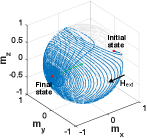
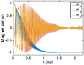
أما AFMs، فلا تبدي بصمة مغناطيسية خارجية لأن عزوم شبكاتها الفرعية المتساوية والمتعاكسة تلغي بعضها بعضاً. ومن ثم لا يمكن أن تتأثر معلمة الترتيب الحجمية بالحقول المغناطيسية الخارجية. ولتبديل الترتيب الحجمي، يجب تطبيق حقول متدرجة (ذات إشارات متعاكسة على الشبكات الفرعية المتقابلة) على عزوم الشبكتين الفرعيتين، كما يوضح الشكل 9 في الشكل الداخلي. غير أن مجالاً مغناطيسياً خارجياً متجانساً لا يستطيع توفير ترتيب حقول متدرجة كهذا، ومن ثم ينتهي به الأمر إلى إمالة عزوم الشبكات الفرعية بطريقة يتوازن فيها العزم الناتج عن المجال الخارجي تماماً مع عزم التبادل الذي يمارسه عزم إحدى الشبكات الفرعية على الأخرى [baltz2018antiferromagnetic]. وبما أن الحقول المغناطيسية الخارجية غير قادرة على إعادة توجيه معلمة ترتيب AFM، فمن المتوقع أن تقاوم SMART ME-AFMRAM هجمات المجال المغناطيسي الموصوفة في [jang2015self]. ونلاحظ أن تبديل حالة مغنطة سطح ME-AFM باستخدام توليفة من حقلي و يتطلب معرفة دقيقة بدورات الكتابة والحالة السابقة للسطح، إضافة إلى وسائل للتحكم صراحةً في المجال الكهربائي، وهي وسائل ينبغي حجبها عن المهاجم.
وفيما يتعلق بالهجمات القائمة على تقلب درجة الحرارة، قد يزيد الخصم درجة الحرارة المحيطة بـME-AFMRAM في محاولة لتغيير البيانات المخزنة. تجدر ملاحظة أن درجة حرارة Néel للكروميا النقية هي 308 K [shi2009magnetism]، وفوقها يتلاشى ترتيب AFM. ومن ثم يمكن للمهاجم إفساد الذاكرة بتسخينها فوق درجة حرارة Néel. ولمواجهة ذلك، نأخذ في الاعتبار كروميا مطعمة بالبورون، ثبت تجريبياً أن درجة حرارة Néel فيها تبلغ K [street2014increasing]. ومن ثم تستطيع الكروميا المطعمة بالبورون زيادة متانة ذاكرة SMART في مواجهة تقلبات درجة الحرارة. وذلك لأن مثل هذه التقلبات الأكبر في درجة الحرارة (فوق 400 K) أسهل كشفاً، كما تصبح التدابير المضادة مثل اعتراض هذه الهجمات أكثر قابلية للتنفيذ.
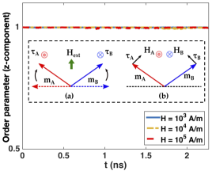
III-C هجمات سرية البيانات
كما في جميع ذواكر NVMs، يمكن للمهاجمين استغلال بقاء البيانات في ذاكرة SMART لسرقة معلومات حساسة. وأكثر التدابير المضادة فعالية ضد هجمات سرية البيانات هذه، بما فيها هجمات الإقلاع البارد وسرقة وحدات الذاكرة، هو تشفير البيانات باستخدام مخطط تشفير آمن قبل تخزينها في الذاكرة. وتستخدم تقنيات تشفير ذاكرة متقدمة مثل تشفير نمط العدّاد (CME) شفرات كتلية مثل Advanced Encryption Standard (AES) لتشفير بذرة باستخدام مفتاح سري، بغية توليد قناع لمرة واحدة (OTP). وتتكون البذرة لكل كتابة على خط ذاكرة من مفتاح سري وعنوان الخط وقيمة عدّاد مرتبطة بذلك الخط، وتزاد مع كل كتابة لاحقة إلى العنوان نفسه. ومن ثم يكون OTP المولد فريداً لكل عنوان خط، وكذلك لكل عملية كتابة إلى العنوان نفسه. ثم تُجرى عملية XOR بين OTP والنص الصريح للحصول على النص المعمى، الذي يُخزن في الذاكرة الرئيسة غير المتطايرة. وتجدر ملاحظة أن المفتاح السري المستخدم في نواة AES يُعد غير متاح للمهاجم.
إن تطبيق مخطط CME القائم على XOR مباشرة على ذاكرة SMART سيؤدي إلى أعباء تشفير كبيرة. ويعود ذلك إلى أن مخطط CME مخصص لذواكر NVMs مثل PCM وSTT-MRAM، التي يكون زمن كتابتها من رتبة ns. أما كمون الوصول في ME-AFMRAM فهو دون النانوثانية عند الانتشار القائم على DW، وبضعة 10ات من ps عند الدوران المتماسك. ويجب أن يكون مخطط التشفير العام لذاكرة SMART، سواء بدّلت عبر انتشار DW أو الدوران المتماسك، بحيث لا يتأثر كمون الوصول الكلي إلى الذاكرة سلباً. وتغدو حلول التشفير القائمة على بوابات CMOS XOR ذات تأخير من رتبة 10ات من ps غير فعالة، إذ إن زمن تشفيرها مقارن بزمن كتابة الذاكرة، مما يؤدي إلى دورات ساعة خاملة.
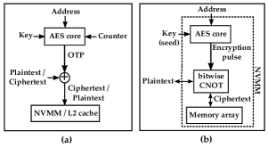
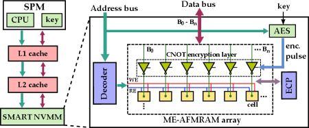
نقترح هنا استخدام التشفير داخل الذاكرة، أو Memcryption، باستخدام بوابات CNOT بتية (أي controlled-NOT) مبنية من منطق قائم على ME-AFM. ومن خلال ربط نبضة التشفير بإشارات التحكم في بوابات CNOT، يمكن تحقيق هذا النمط من Memcryption. وتستطيع أجهزة اللف المغزلي مثل ترانزستور ME-AFM [dowben2018towards] تنفيذ بوابات منطق متعددة الأشكال، يمكنها تقديم وظيفة عاكسة أو غير عاكسة اعتماداً على إشارة تحكم [patnaik2018advancing, patnaik2019spin]. ومن ثم يُستخدم ترانزستور ME-AFM لتحقيق بوابة CNOT. كما ثبت أن ترانزستور ME-AFM يبدي تأخيرات صغيرة تصل إلى ps، وهي أسرع بكثير من بوابات CMOS XOR ومتوافقة مع أزمنة الكتابة في ذاكرة SMART. ومن شأن هذا التجانس في التقنية والمواد، باستخدام ME-AFM فقط لكل من خلايا الذاكرة وبوابات CNOT، أن يسهّل التصنيع. في Memcryption، ندمج بوابات CNOT القائمة على ترانزستورات ME-AFM مباشرة في مسار البيانات المتصل بمصفوفة الذاكرة؛ ومن ثم يكون التشفير داخل الذاكرة، خلافاً للأعمال السابقة التي تستخدم كتلة تشفير منفصلة. ولا يضر هذا التكامل بين التشفير ومصفوفة الذاكرة بكثافة الذاكرة، لأن ترانزستورات ME-AFM تملك بصمة مساحية أصغر بكثير من بصمة بوابات CMOS XOR. ويقارن الشكل 10 مخطط Memcryption لدينا بتقنيات CME السابقة.
تظهر معمارية ذاكرة SMART مع Memcryption في الشكل 11. ويُسلسَل مفتاح موثوق بطول 128-bit، يُقدَّم ويُخزَّن داخل وحدة معالجة آمنة (SPM) إلى جانب المعالج، مع عنوان الذاكرة ويُستخدم كبذرة لـAES. ومن ثم تنتج نواة AES، المزمع دمجها على رقاقة NVM،11 1 ليس التكامل غير المتجانس بين اللف المغزلي وCMOS مانعاً للتنفيذ، لأن تقنية AFM الأساسية متوافقة مع عمليات CMOS في BEOL. وبوجه عام، دُرست التصاميم الهجينة بين اللف المغزلي وCMOS في أعمال سابقة [yogendra2015domain]. نبضة تشفير تُستخدم بتاتها كبتات تحكم لبوابات CNOT في طبقة التشفير داخل الذاكرة. وتبعاً لبتات التحكم، تقلب طبقة التشفير بتات مختارة في النص الصريح قبل تنفيذ كتابة في الذاكرة. وفي أثناء فك التشفير، تُولَّد نبضة التشفير نفسها مرة أخرى وتُستخدم لتنفيذ عمليات CNOT بتية على النص المعمى (المقروء من الذاكرة)، للحصول على النص الصريح.
تُعرض مقارنة بين مخطط Memcryption وCME (عند تطبيقه أيضاً على ME-AFMRAM) في الجدول III. والمصفوفة المدروسة هي ME-AFMRAM بعرض 128-bit، في حين صُممت نواة AES والطرفيات CMOS اصطناعياً باستخدام تقنية 15nm من NanGate. ونلاحظ أن Memcryption مع ذاكرة SMART يحقق كمون تشفير أفضل من CME، الذي يستخدم بوابات XOR عادية من CMOS. كما نلاحظ أن Memcryption يساعد على خفض كمون التشفير، لكنه مشابه لـCME من حيث أعباء الطاقة. ويرجع ذلك إلى أن تبديد الطاقة تهيمن عليه نواة AES في كل الأحوال. ونؤكد أيضاً أن Memcryption مصمم خصوصاً كمخطط من جهة الذاكرة لـME-AFMRAM، بغية تحقيق كمون تشفير منخفض، بفضل تجانس تأخيرات مصفوفة الذاكرة وطبقة التشفير. إلا أنه قد لا يكون تنفيذاً فعالاً لأي NVM عام.
وفيما يتعلق بموثوقية ME-AFMRAM المستخدمة لبناء ذاكرة SMART وعمرها، فإن تحملها مقارن بتحمل STT-MRAM. ومع ذلك، فهي تعاني أيضاً من الأخطاء نفسها التي تصيب STT-MRAM، أي أعطال في دوائر CMOS الطرفية بما فيها ترانزستورات الوصول [chintaluri2016analysis]. ولمعالجة هذه الأعطال وضمان صحة البيانات المخزنة، يمكن تنفيذ تقنيات تصحيح الأخطاء القياسية لذواكر NVMs [swami2017reliable]، مثل مؤشر تصحيح الأخطاء (ECP) ومخططات متقدمة أخرى قائمة على ECP، بما في ذلك “Pay-As-You-Go” [qureshi2011pay] و“Zombie memory” [azevedo2013zombie]، من جهة الذاكرة ودمجها على مصفوفة ME-AFMRAM. ويمكن تحقيق ذاكرة ECP باستخدام تقنية لف مغزلي متجانسة، بما في ذلك STT-MRAM أو ME-AFMRAM نفسها، أو بالاستفادة من تكامل غير متجانس بين اللف المغزلي وCMOS.
| Encryption technique | Latency | Energy |
|---|---|---|
| CME [chhabra2009making] | 299.23 ps (2.99) | 17.371 pJ |
| Memcryption | 273.46 ps (2.73) | 17.370 pJ |
III-D هجمات قناة الاستطاعة الجانبية
إن خصائص القراءة/الكتابة غير المتماثلة في ذواكر NVMs مثل STT-MRAM تجعلها عرضة لهجمات القنوات الجانبية التي تستغل البصمات المختلفة المتكبدة عند قراءة/كتابة بتات ‘1’ وبتات ‘0’. تستخدم STT-MRAMs وصلات MTJ ذات طبقة مرجعية ثابتة من FM، مع طبقة حرة أخرى موجهة إما بالتوازي أو على نحو مضاد للتوازي مع تلك الطبقة المرجعية. وتبعاً للتوجيه النسبي لهاتين الطبقتين، تقع MTJ في حالة مقاومة منخفضة أو عالية؛ وتقابل الحالة المنخفضة أو العالية حالة المنطق ‘0’ أو حالة المنطق ‘1’، على التوالي. ومن ثم تختلف التيارات المسحوبة لعمليات القراءة/الكتابة تبعاً لقراءة/كتابة ‘0’ أو ‘1’. وبذلك يستطيع مهاجم وصل مقاومة في تشكيل مقسم جهد مع خلية MTJ، ومراقبة هبوطات الجهد عبر تلك المقاومة، وتنفيذ DPA لاستعادة البيانات التي تُكتب في الخلية أو تُقرأ منها. وفي الواقع، عُرض هجوم كهذا على ذاكرة مخبئية قائمة على STT-MRAM في [khan2017side].
بالنسبة إلى ذاكرة SMART، نتذكر أن الكتابة تتحقق باستخدام مجالات كهربائية لا تيارات. وفضلاً عن ذلك، فإن مقدار المجال الكهربائي المطلوب لكتابة قيم ‘0’ وقيم ‘1’ متكافئ؛ انظر آثار جهد الكتابة وجهد الاستقطاب في الشكل 3. ويعود ذلك إلى عدم وجود طبقة مرجعية أو مقاومة نفقية مغناطيسية في ME-AFMRAM، مما كان سيسبب عدم تماثل. أما في عملية القراءة، فإن العزم المستحث بتأثير القرب في قطب Pt يختلف قليلاً عند قراءة ‘0’ أو ‘1’. غير أنه يمكن تعويض هذا الاختلال في إشارات هول بإدخال إزاحات مناسبة في إعداد قياس هول، كما بُرهن في [kosub2017purely]. ومن ثم تستطيع ذاكرة SMART تحقيق بصمات متماثلة لكل من القراءة والكتابة، ولكل من انتقالات ‘01’ و‘10’، وبذلك تحبط أي هجمات قناة جانبية للقدرة قائمة على DPA.
III-E القناة الجانبية الفوتونية والهجمات من الجهة الخلفية
بُرهن حديثاً استغلال القناة الجانبية الفوتونية (PSC) للالتفاف على الضمانات الأمنية التي تقدمها خوارزميات التعمية مثل AES وRSA [ferrigno2008aes, schlosser2013simple]. ويمكن إجراء تحليل الانبعاث الفوتوني البسيط (SPEA) أو تحليل الانبعاث الفوتوني التفاضلي (DPEA) باستخدام معدات انبعاث ضوئي متاحة بتكلفة مماثلة لمعدات تحليل الاستطاعة. ويتمثل جوهر PSC في رصد الانبعاثات الضوئية الناشئة عن تبديل ترانزستورات CMOS. وبالنسبة إلى الذواكر القائمة على SRAM أو DRAM، يمكن بعد ذلك ربط هذا الانبعاث بالبيانات التي تُبرمج في الذاكرة. وفي [ferrigno2008aes]، وُجد أن PSC تنشأ عندما تنتقل الطاقة الحركية التي تكتسبها حوامل الشحنة في قناة الترانزستور إلى فوتونات، يمكن رؤيتها عبر كواشف ضوئية. وفي [schlosser2013simple]، استغل المؤلفون هذه المعلومة لتنفيذ هجوم قناة جانبية، وانتهوا إلى استعادة مفتاح AES كاملاً. وتستخدم الرقائق المعاصرة طبقات معدنية متعددة، تتداخل مع انبعاث الفوتونات من الجهة الأمامية لأي دائرة متكاملة (IC)؛ ولذلك فإن اتجاهاً طبيعياً هو رصد انبعاث الفوتونات من الجهة الخلفية للدوائر المتكاملة.
في حين أن تقنيات الذاكرة القائمة على CMOS مثل SRAM وDRAM عرضة لمثل هذه هجمات PSC، فإن ذاكرة SMART قائمة على AFM ولا تتضمن انبعاثات فوتونية صادرة من قنوات الترانزستورات. ولا يمكن إنجاز قراءة البيانات في ذاكرة SMART إلا عبر إعداد قياس AH. وفضلاً عن ذلك، حتى لو تمكن مهاجم متقدم من عزل خلية ذاكرة SMART والوصول إلى إعداد AH من الجهة الأمامية، فلن يتمكن إلا من استعادة النص المعمى المشفر (كما وُصف في القسم III-C).
IV الخلاصة
نقدم في هذه الورقة SMART: ذاكرة غير متطايرة آمنة ومحصّنة ضد العبث قائمة على مضادّات المغناطيسية المغناطوكهربائية، وذلك باستثمار الخصائص الفريدة لـME-AFMs. وتملك ME-AFMRAM، التي تقع في لب ذاكرة SMART، كمون وصول مقداره sub-1 ns (للتبديل القائم على DW) ينخفض إلى بضعة 10ات من ps فقط (للتبديل بالدوران المتماسك)، مع طاقة لكل بت مقدارها 0.13 pJ. وبالإضافة إلى أدائها المتفوق مقارنةً بذواكر NVMs السابقة مثل STT-MRAM وPCM، لا تبدي ذاكرة SMART أي حساسية للحقول المغناطيسية الخارجية، مما يجعلها متينة أمام العبث بالبيانات القائم على المجال المغناطيسي وهجمات حجب خدمة الذاكرة التي كثيراً ما تعاني منها ذواكر NVMs الأخرى القائمة على المواد الفيرومغناطيسية. ولحل ثغرة بقاء البيانات الأمنية (بعد انقطاع الطاقة) في ذاكرة SMART، نبرهن تقنية تشفير جديدة تسمى Memcryption. ويستخدم هذا المخطط منطقاً ناشئاً قائماً على ME-AFM لتنفيذ تشفير داخل الذاكرة متمركز حول CNOT، وهو مصمم خصوصاً لتقليل كمون التشفير وفك التشفير في ذاكرة SMART. وفضلاً عن ذلك، فإن بصمات القراءة والكتابة المتماثلة لبتات ‘0’ و‘1’ تجعل هجمات القنوات الجانبية البارزة، مثل هجوم الاستطاعة التفاضلي، عديمة الجدوى ضد ذاكرة SMART. كما أن هجمات القناة الجانبية الفوتونية المتقدمة، وهي تهديدات قوية ضد أي دائرة CMOS متكاملة عبر رصد كل نشاط داخلي للترانزستورات من الجهة الأمامية أو الخلفية، غير فعالة ضد ذاكرة SMART بسبب آلية التبديل المختلفة جوهرياً، وكذلك بفضل الحماية المقترحة Memcryption.
References
| Nikhil Rangarajan (S’15–M’20) هو زميل ما بعد الدكتوراه في Division of Engineering، New York University Abu Dhabi، UAE. يحمل درجتي Ph.D. وM.S. في الهندسة الكهربائية من New York University، NY، USA. وتشمل اهتماماته البحثية اللف المغزلي الإلكتروني، والإلكترونيات النانوية، وفيزياء الأجهزة، وأمن العتاد. وهو عضو في IEEE. |
| Satwik Patnaik (S’16) حصل على B.E. في الإلكترونيات والاتصالات من University of Pune، India، وعلى M.Tech. في علوم وهندسة الحاسوب مع تخصص في تصميم VLSI من Indian Institute of Information Technology and Management، Gwalior، India. وهو مرشح Ph.D. في سنته الأخيرة في Department of Electrical and Computer Engineering في Tandon School of Engineering ضمن New York University، Brooklyn، NY، USA. كما أنه Global Ph.D. Fellow في New York University Abu Dhabi، U.A.E. حصل على الميدالية البرونزية في فئة الدراسات العليا في ACM/SIGDA Student Research Competition (SRC) المنعقدة في ICCAD 2018، وعلى جائزة أفضل ورقة في Applied Research Competition (ARC) المنعقدة بالتزامن مع Cyber Security Awareness Week (CSAW)، 2017. وتشمل اهتماماته البحثية الحالية أمن العتاد، وقضايا الثقة والموثوقية في CMOS والأجهزة الناشئة، مع تركيز خاص على تصميم VLSI منخفض الاستطاعة. وهو عضو طالب في IEEE وACM. |
| Johann Knechtel (M’11) حصل على M.Sc. في هندسة نظم المعلومات (Dipl.-Ing.) في 2010 وعلى Ph.D. في هندسة الحاسوب (Dr.-Ing., summa cum laude) في 2014، وكلاهما من TU Dresden، Germany. وهو عالم أبحاث في New York University، Abu Dhabi، UAE. وكان الدكتور Knechtel باحث ما بعد الدكتوراه في 2015–16 في Masdar Institute of Science and Technology، Abu Dhabi. ومن 2010 إلى 2014، كان Ph.D. Scholar في DFG Graduate School حول “Nano- and Biotechnologies for Packaging of Electronic Systems” المستضافة في TU Dresden. وفي 2012، كان مساعداً بحثياً في Dept. of Computer Science and Engineering، Chinese University of Hong Kong، China. وفي 2010، كان طالب أبحاث زائراً في Dept. of Electrical Engineering and Computer Science، University of Michigan، USA. وتغطي اهتماماته البحثية أتمتة التصميم الفيزيائي لـVLSI، مع تركيز خاص على التقنيات الناشئة وأمن العتاد. |
| Ozgur Sinanoglu (M’11–SM’15) هو أستاذ في الهندسة الكهربائية وهندسة الحاسوب في New York University Abu Dhabi. حصل على درجتي B.S.، إحداهما في الهندسة الكهربائية والإلكترونية والأخرى في هندسة الحاسوب، وكلتاهما من Bogazici University، Turkey في 1999. وحصل على درجتي MS وPhD في علوم وهندسة الحاسوب من University of California San Diego في 2001 و2004، على التوالي. ولديه خبرة صناعية في TI وIBM وQualcomm، وهو في NYU Abu Dhabi منذ 2010. وخلال PhD، فاز بمنحة IBM PhD Fellowship مرتين. كما أنه حصل على جوائز أفضل ورقة في IEEE VLSI Test Symposium 2011 وACM Conference on Computer and Communication Security 2013. تشمل اهتمامات الأستاذ Sinanoglu البحثية التصميم من أجل الاختبار، والتصميم من أجل الأمن، والتصميم من أجل الثقة في دارات VLSI، وله أكثر من 180 ورقة مؤتمر ومجلة، و20 براءات اختراع أمريكية ممنوحة وقيد النظر. وقد قدم الأستاذ Sinanoglu أكثر من اثني عشر درساً تعليمياً عن أمن العتاد والثقة في مؤتمرات CAD والاختبار الرائدة، مثل DAC وDATE وITC وVTS وETS وICCD وISQED وغيرها. وهو يعمل رئيساً لمسار/موضوع أو عضواً في لجنة البرنامج التقني في نحو 15 مؤتمراً، كما يعمل محرراً مشاركاً (ضيفاً) في مجلات IEEE TIFS وIEEE TCAD وACM JETC وIEEE TETC وElsevier MEJ وJETTA وIET CDT. الأستاذ Sinanoglu هو مدير Design-for-Excellence Lab في NYU Abu Dhabi. وتُموَّل أبحاثه الحديثة في أمن العتاد والثقة من US National Science Foundation، وUS Department of Defense، وSemiconductor Research Corporation، وIntel Corp، وMubadala Technology. |
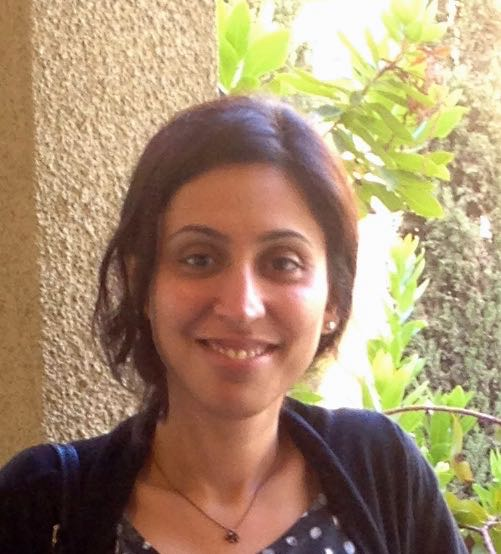 |
Shaloo Rakheja (M’13) هي أستاذة مساعدة في الهندسة الكهربائية وهندسة الحاسوب في Holonyak Micro and Nanotechnology Laboratory، University of Illinois at Urbana-Champaign، Urbana، IL، USA، حيث تعمل على الأجهزة والدوائر النانوية الإلكترونية. وكانت سابقاً أستاذة مساعدة في الهندسة الكهربائية وهندسة الحاسوب في New York University، Brooklyn، NY، USA. وقبل انضمامها إلى NYU، كانت باحثة ما بعد الدكتوراه في Microsystems Technology Laboratories، Massachusetts Institute of Technology، Cambridge، USA. حصلت على درجتي M.S. وPh.D. في الهندسة الكهربائية وهندسة الحاسوب من Georgia Institute of Technology، Atlanta، GA، USA. |